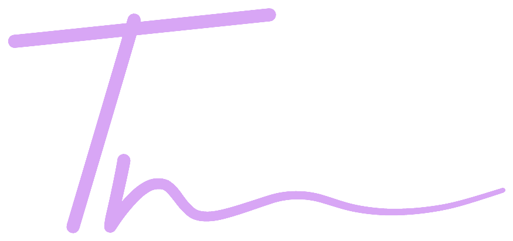
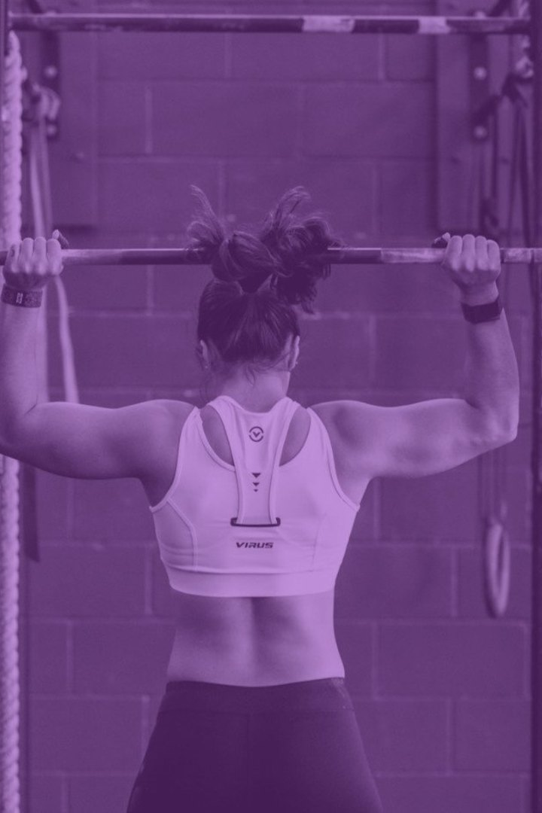
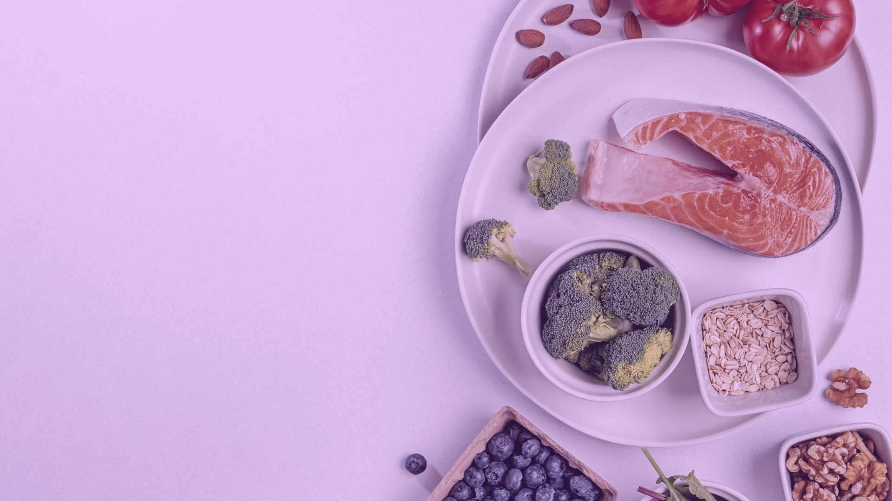
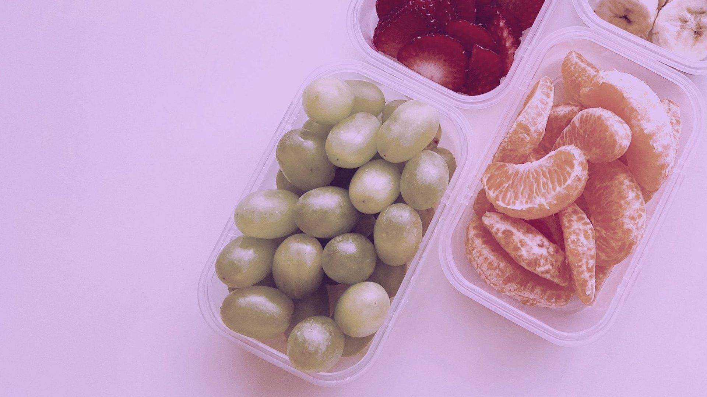
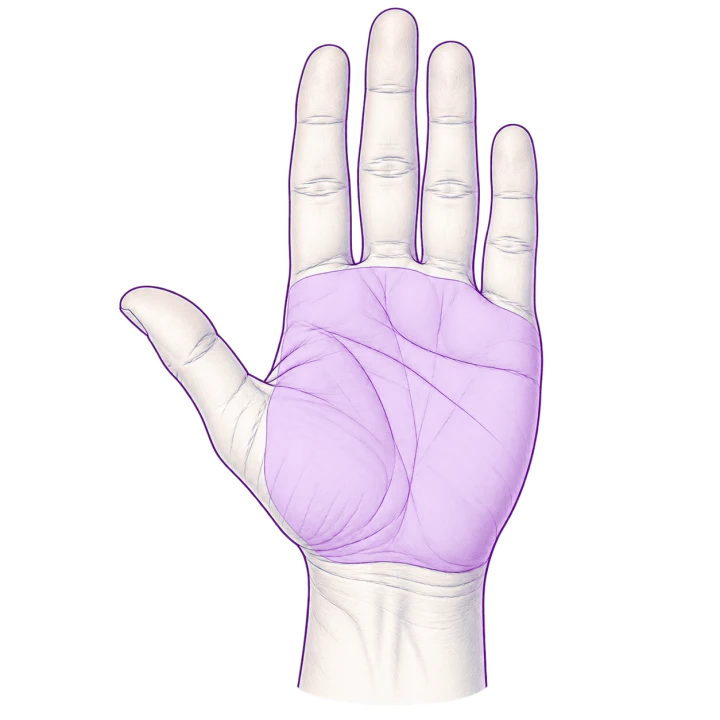
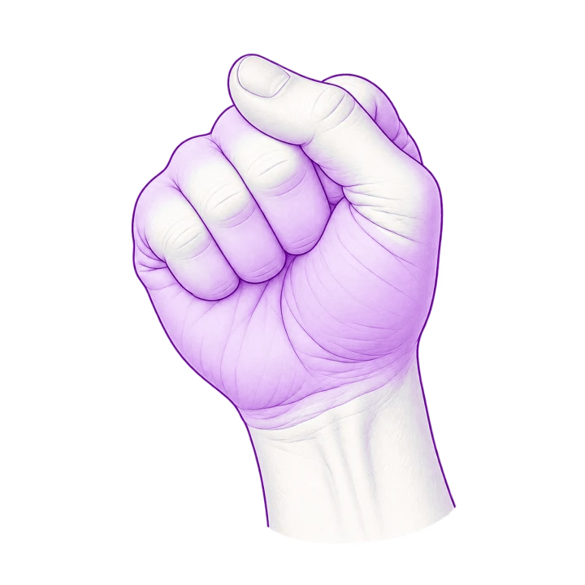
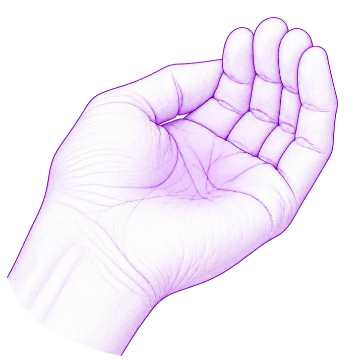

Ženské zdraví · Dlouhověkost
Women's Health: vitalita v kontextu longevity medicíny
Střední věk jako okno příležitosti pro zdravé stárnutí
Mgr. Ing. Tereza Vágnerová, Ph.D.
Co si dnes odnesete
Pět klíčových otázek. Odpovědi opřené o aktuální vědecké důkazy.
01
Co se v těle během menopauzální tranzice skutečně mění?
02
Proč na těchto změnách záleží i z pohledu zdraví za deset či dvacet let?
03
Které intervence mají skutečně prokázaný efekt?
04
Existuje způsob stravování, který může tyto změny významně ovlivnit?
05
Co má smysl začít dělat už zítra?
Každá část končí jasnou odpovědí na danou otázku a hodnocením síly dostupných důkazů.
02
Rámec
Tři roviny, které se v debatě o menopauze často zaměňují.
Léčba příznaků
Zmírnit aktuální obtíže
Návaly, spánek, vaginální suchost, nálada. Cíl - lepší kvalita života teď.
Prevence nemocí
Vliv na zdraví v letech
Srdce, metabolismus, kosti, svaly, mozek. Cíl - více let ve zdraví.
Podpora změny chování
Doporučení do praxe
Návyky, prostředí, motivace, plánování. Cíl - změnu skutečně udržet.
03
Rámec
U každého tvrzení uvedena jistotu důkazů.
A
Vysoká jistota
Kvalitní a konzistentní důkazy. Závěr je velmi spolehlivý.
B
Střední jistota
Důkazy jsou přesvědčivé, ale mají určitá omezení. Závěr je pravděpodobný.
C
Nízká / velmi nízká jistota
Důkazy jsou omezené, nepřesné nebo nekonzistentní. Závěr zůstává nejistý.
P
Praktický nástroj
Pomůcka pro zavedení doporučení do praxe. Nejde o hodnocení důkazů.
04
Část první · Fyziologie přechodu
Co se vlastně v těle děje?
Biologické změny jsou reálné. Střední věk je ale zároveň obdobím, kdy lze ovlivnit další trajektorii zdraví.
05
Prevence · Staging STRAW+10
Menopauza je konkrétní bod v čase. Přechod trvá několik let.
B
Staging podle klinických kritérií
Pozdní repro
Časná peri
Pozdní
peri
Postmenopauza
Cyklus působí pravidelně, mění se ale jeho délka.
Přetrvávající rozdíl ≥ 7 dní v délce po sobě jdoucích cyklů.
Pauza 60 a více dní.
Menopauza je určena retrospektivně po 12 měsících amenorey (po poslední menstruaci).
Kritéria stagingu dle ESE Clinical Practice Guideline 2025 a NICE NG23, 2026
06
Prevence · Fyziologie přechodu
Nejde „jen“ o pokles hormonů. Jde o ztrátu předvídatelného hormonálního vzorce.
B
Longitudinální hormonální data
Reprodukční období
Perimenopauza
estradiol
progesteron
FSH
LH
inhibin
Jednorázové stanovení hormonů perimenopauzu obvykle nepotvrdí ani nevyloučí. Diagnóza je u žen především klinická. · Tvar křivek dle záznamu Hee J et al., Maturitas 1993;18:9
07
Léčba příznaků · Aktuální obtíže
Návaly jsou běžné, ne výjimečné.
B
Podíl závisí na kohortě a definici
80 %
žen má v pozdní fázi přechodu / časné postmenopauzy návaly
7,4
roku medián trvání, z toho 4,5 roku po poslední menstruaci (≥ 6 dní / 2 týdny)
20–30 %
žen kvůli nim vyhledá lékaře (pouze)
Další časté projevy
poruchy spánku (buzení, nízká kvalita / délka)
výkyvy nálad, úzkost
vaginální suchost, snížené libido
bolesti kloubů
zapomnětlivost, potíže se soustředěním („brain fog“)
změny tělesného složení (nárůst viscerálního tuku)
SWAN, medián trvání návalů 7,4 roku · UpToDate, Menopausal hot flashes, 2026
08
Mýtus a fakt
Co se o přechodu říká a co o něm víme?
B
Kohortová data, široký rozptyl
Mýtus
„Přechod začíná, až když začne vynechávat menstruace.“
Fakt
Změny mohou začít dříve. Menstruační cyklus se zprvu mění jen nenápadně a hormonální i některé symptomatické změny mohou předcházet výrazné nepravidelnosti.
09
Odpověď · Co se vlastně děje v těle?
Nejde o náhlý hormonální pád.
Jde o několik let proměny.
Menopauza je konkrétní bod v čase, přechod ale trvá roky. Nejtěžší na ní nebývá „nízký estrogen“, ale jeho nepředvídatelnost. Je přechodným obdobím nestability, po kterém přichází stabilnější hormonální fáze.
10
Část druhá · Důsledky změn
Proč na těchto změnách záleží z pohledu longevity?
V období kolem menopauzy se některé změny kostí, lipidů a tělesného složení zrychlují nad rámec samotného stárnutí. Právě proto je střední věk důležitým obdobím pro prevenci.
11
Prevence · Proč teď?
Po menopauze žijete víc než třetinu života.
B
Populační data, Eurostat
34,1 let
zbývající life expectancy
česká žena, která se dožila 50 let
menopauza 51,4 (medián)
62,6 healthy life years at birth
17,9 ROKU BEZ OMEZENÍ
Naděje dožití žen v ČR je 83,2 roku. Nejde jen o délku života. Jde o to, kolik z těchto let prožijeme ve zdraví.
Eurostat 2024, ČR
12
Prevence · Mapa
Pět oblastí zdraví, které si zaslouží pozornost.
Menopauza
Srdce a cévy
Lipidy, tlak, riziko aterosklerózy.
Metabolismus
Viscerální tuk, inzulinová rezistence.
Kost a sval
Kostní denzita, svalová hmota/síla, riziko pádů.
Mozek a psychika
Spánek, nálada, kognice.
Urogenitál
Suchost, bolest, kontinence, libido.
Nejde o pět oddělených problémů. Jde o jednu propojenou trajektorii zdraví sdílející řadu stejných preventivních nástrojů.
13
Prevence · Složení těla
Hmotnost neříká celý příběh. Složení těla se mění.
B
Longitudinální kohorta SWAN
−0,2 %
tukuprosté masy za rok
Ztráta svalu je ta část, která opravdu snižuje energetický výdej.
+0,45 kg
tukové hmoty za rok
A přesouvá se: ubývá na bocích, přibývá v pase.
Hmotnost může změnu skrýt.
Sledujte obvod pasu, sílu a funkční kapacitu. Ty se mohou zlepšovat i bez výrazné změny hmotnosti.
Ztráta svalů není nevyhnutelná. Svalová síla může klesat rychleji než svalová hmota.
SWAN: tempo nárůstu tukové hmoty se během tranzice téměř zdvojnásobilo z přibližně +1,0 % na +1,7 % ročně.
14
Prevence · Kost
Kost začínáme ztrácet dřív, než ji začneme měřit.
B
Kohortová a mechanistická data
1. fáze, perimenopauza. Od 1. roku před do 2 let po poslední menstruaci.
2. fáze, 4 až 8 let po tranzici. Věkem podmíněné zpomalení novotvorby kostní hmoty.
Nejrychlejší ztráta probíhá před věkem rutinního screeningu. Indikace DXA se řídí individuálním rizikem.
15
Prevence · Mozek
Spánek není jen komfort.
Je součástí zdraví mozku.
Poruchy spánku jsou v longitudinálních studiích spojeny s vyšším rizikem kognitivního poklesu a demence.
Lancet Commission 2024 spánek nezařadila mezi 14 etablovaných modifikovatelných rizikových faktorů demence!
16
Léčba příznaků · Psychické zdraví
Perimenopauza je období zvýšené zranitelnosti – ne diagnóza sama.
Nejvyšší zranitelnost mají zejména ženy s depresí v anamnéze, výraznými psychosociálními stresory a často také s vasomotorickými symptomy či poruchami spánku.
B
Kohortová data, silná u rizikových žen
2–4×
vyšší riziko deprese v přechodu
Přesněji o 40 % vyšší riziko depresivních symptomů nebo diagnózy v perimenopauze.
Menopause-specific CBT je doporučenou možností pro VMS a spánkové obtíže.
17
Prevence · Riziko demence
Chrání hormonální léčba mozek před demencí?
B
Velká kohorta,
ne randomizace
ne randomizace
Otázka
Souvisí užívání hormonální léčby s rizikem demence?
Zjištění
183 450 postmeno žen, průměrné sledování 13,3 roku. HRT ≥ 1 rok byla spojena s o 10 % nižším rizikem demence ze všech příčin. Silněji u chirurgické menopauzy a u nosiček APOE4 (slabší).
Interpretace
Výsledky jsou kompatibilní s hypotézou „window of opportunity“. Nižší riziko bylo pozorováno při zahájení HRT mezi 46–56 lety. Jde ale o observační asociaci, nikoli důkaz neuroprotektivního účinku.
Limit
Observační data – možný healthy-user bias a reziduální confounding. Studie nerozlišovala spolehlivě typ, dávku ani cestu podání HRT.
Squires S et al., Alzheimer's & Dementia 2026;22:e71679, UK Biobank
18
Léčba příznaků · Urogenitál a sexuální zdraví
Obtíže, které často samy neodejdou. A o kterých se málo mluví.
A
Shoda doporučení, jasný postup
Co to je (urogenitální syndrom menopauzy)
Suchost, pálení či podráždění, bolest při sexu, dysurie, urgence/frekvence močení a recidivující infekce močových cest. Na rozdíl od vasomotorických symptomů GSM často přetrvává a bez léčby může postupovat.
Sexuální zdraví sem patří jako součást péče, ne jako nepovinný dodatek.
Jaké jsou možnosti léčby?
01
nízkodávkovaný lokální estrogen / jiná léčiva
02
lubrikanty a hydratační přípravky
03
fyzioterapie pánevního dna
04
psychosexuální poradenství
Nízkodávkovaný vaginální estrogen ≠ systémová MHT. Vstřebávání do oběhu je minimální a závažné nežádoucí účinky jsou velmi vzácné. Současná data neukazují zvýšení rizika karcinomu prsu ani endometria. Lze jej používat i současně se systémovou MHT.
EMAS 2026 · UpToDate, Genitourinary syndrome of menopause, 2026 · TMS, GSM statement 2020
19
Mýtus a fakt
Přibírání v přechodu není jen o hormonech. Ani o vůli.
B
Kohorty a přehledové práce
Mýtus
„Po padesátce se prostě přibere a nedá se s tím nic dělat.“
Fakt
Věk, životní styl i menopauzální tranzice se sčítají – mění tělesné složení (více tuku se ukládá centrálně a svalová hmota je zranitelnější). Silné symptomy navíc mohou ztížit udržení návyků. Váha proto zachytí jen část změny.
Baraut MC. Clin Nutr ESPEN. 2026 · Greendale GA et al. JCI Insight. 2019 · Jiang Y et al. Front Public Health.
20
Odpověď · Proč na tom záleží ještě za dvacet let?
Rizikové trajektorie se mění dřív, než vznikne nemoc. Proto je prevence důležitá právě teď.
Během menopauzální tranzice se mohou měnit kardiometabolické riziko, tělesné složení a kostní hmota ještě před vznikem klinického onemocnění. Smyslem prevence je zachytit a ovlivnit trajektorii, ne čekat na diagnózu.
21
Část třetí · Co skutečně funguje?
Které intervence doopravdy fungují?
Léčba symptomů. Prevence. Každodenní návyky. Každé má jinou evidenci a jiný účel.
22
Léčba příznaků · Hormonální léčba
Hormonální terapie je nejúčinnější léčbou VMS. Její volba je ale individuální.
Přínosy a rizika se hodnotí individuálně podle věku, anamnézy, symptomů a preferencí. Pro ženy, které MHT nechtějí nebo pro ně není vhodná, existují účinné nehormonální možnosti.
A
NICE NG23 · ESE 2025
23
Prevence · Evidenční karta
Chrání hormonální léčba před nemocí?
A
Shoda guidelines 2025 a 2026
Otázka
Má se hormonální léčba užívat pro prevenci chronických nemocí?
Zjištění
Je nejúčinnější léčbou návalů a je účinná na kost. Jako samostatná primární prevence se nedoporučuje.
Interpretace
Indikací jsou příznaky, časná menopauza a ovariální insuficience. Poměr přínosu a rizika je nejlepší do 60 let nebo do 10 let od menopauzy.
Limit
Riziko závisí na formě, dávce a cestě podání. Rozhodnutí je individuální a patří do ordinace.
NICE NG23, 2026 · ESE guideline 2025 · The Menopause Society, position statements
24
Léčba příznaků · Nehormonální
Nehormonální léčba VMS – co má oporu v důkazech?
A
Position statement, úrovně důkazů
Doporučeno
Úroveň I
- menopause-specific CBT
- klinická hypnóza
- SSRI / SNRI (ne první volba)
- gabapentin
- fezolinetant
Slabší doporučení
Zvažovat individuálně
- oxybutynin
- redukce hmotnosti
- stelátní blokáda
Nízká evidence
Podpůrná terapie
- doplňky a bylinné přípravky
- sója, sójové extrakty a equol
- dechová cvičení / paced respiration
- chlazení a vyhýbání se triggerům
- jóga a mindfulness
- akupunktura
- dietní modifikace
Po hormonálně senzitivním nádoru, zejména karcinomu prsu, jsou při VMS zpravidla první volbou nehormonální možnosti. Léčba se individualizuje ve spolupráci s onkologem.
The Menopause Society, nonhormone therapy position statement 2023
25
Prevence · POI a časná menopauza
U POI před 40. rokem není hormonální léčba jen léčbou symptomů. Je součástí prevence.
A
Shoda guidelines, data z jiné populace
1 z 250
žen do 35 let
Primární ovariální insuficience není vzácnost.
1 z 100
žen do 40 let
Mezi 40–44. rokem jde o časnou menopauzu.
do 51 let
trvání léčby
Nejde jen o symptomy. Jde o náhradu předčasného hormonálního deficitu.
Výskyt POI nejméně kolem 1–3 % a některé novější globální odhady až kolem 3,7 %!
26
Prevence versus léčba příznaků
Pohyb není primární léčbou VMS.
Je ale jednou z nejsilnějších intervencí pro zdraví.
Je ale jednou z nejsilnějších intervencí pro zdraví.
A
Přehledy pro obě tvrzení
Na návaly
Nedoporučeno jako primární terapie
Pohyb může VMS zmírnit, nejlépe vychází odporový trénink. Jako spolehlivá samostatná léčba VMS ale zatím není etablován.
Na dlouhodobé zdraví
„Polypill“ pro zdraví
Kardiovaskulární riziko, inzulinová senzitivita, kostní denzita, svalová funkce a hmota, spánek, nálada.
Pohyb nemusí změnit každý symptom. Mění ale trajektorii zdraví.
27

Prevence · Dávka pohybu
Chůze se počítá.
Pro sval a kost ale nestačí sama.
Pro sval a kost ale nestačí sama.
150–300
minut středně intenzivní aerobní aktivity týdně, nebo 75–150 minut vysoce intenzivní aktivity
≥ 2×
a více týdně posilování velkých svalových skupin (≥ 70 % 1RM) + nárazy. Lepší redukce tuku!
Silový trénink není bonus navíc. Je samostatnou součástí doporučení pro zdraví.
A
Doporučení WHO
28
Léčba příznaků · Spánek
Nedostatek spánku není jen „únava“.
Mění i metabolické podmínky.
Mění i metabolické podmínky.
Nedostatek spánku pak může vytvářet méně příznivé podmínky pro regulaci příjmu energie a tělesného složení (+308 kcal/den a zhruba 11 % nárůst viscerálního tuku).
A
RTC u meno
Při spánkové deprivaci byl podíl ztracené hmotnosti pocházející z tuku o 55 % nižší a ztráta FFM byla asi o 60 % vyšší. Patrné zhoršení inzulinové senzitivity i při mírné deprivaci.
29
Nástroj · Práce
Menopauza se odehrává i v práci.
B
Průzkumy a observační data
Co obtíže zhoršuje
- vysoká pracovní zátěž a nízká autonomie
- směnný provoz a nepružná pracovní doba
- nemožnost regulovat teplotu a větrání
- prostředí, ve kterém se o obtížích nedá otevřeně mluvit
Co pomáhá
- větší kontrola nad organizací práce
- pružnější pracovní doba nebo úprava směn
- možnost regulovat teplotu, přístup k vodě a klidnému prostoru
- informovaný a podporující vedoucí
- otevřená komunikace bez stigmatizace
Pracovní prostředí může symptomy zesilovat nebo naopak usnadnit jejich zvládání. Zranitelnější mohou být ženy s vysokou pracovní zátěží, nízkou autonomií a omezenou možností upravit pracovní podmínky (např. zdravotní sestry).
EMAS 2026, Healthy menopause, Maturitas
30
Mýtus a fakt
Hormonální léčba a rakovina prsu.
A
Shoda doporučení, individuální riziko
Mýtus
„Hormonální léčba způsobuje rakovinu prsu.“
Fakt
V únoru 2026 FDA schválila změny labelingu šesti MHT přípravků a odstranila z boxed warning mimo jiné obecné varování týkající se karcinomu prsu. Samotný estrogen po hysterektomii spojen s nižší incidencí i mortalitou na karcinom prsu.
NICE NG23, 2026 · The Menopause Society, hormone therapy position statement 2022
31
Nástroj · Účelnost léčby
Nestačí najít účinnou intervenci.
Musí být také udržitelná.
Musí být také udržitelná.
B
Observační data, ne randomizovaná
61 %
žen, které zahájí systémovou hormonální léčbu, po 12 měsících už v léčbě nepokračuje
59 %
ji ukončí do 2 let, často bez konzultace s lékařem
Nejčastější důvody byly doporučení zdravotníka (~31 %), obavy z rizik (~26 %), preference „přirozenějšího“ přístupu (~26 %), nežádoucí účinky (~17 %) a zlepšení symptomů (~11 %), zhruba 9 % uvádělo, že léčba podle nich nefungovala.
UpToDate, Treatment of menopausal symptoms with hormone therapy, 2026
32
Odpověď · Co z toho doopravdy funguje?
Pohyb, spánek a strava mírní dlouhodobé riziko, ale návaly zcela nespraví.
MHT je nejúčinnější léčbou VMS, u GSM je standardem lokální vaginální estrogen. Pohyb, kvalitní spánek a strava jsou základem dlouhodobé prevence a mohou některé symptomy také ovlivnit, nejsou ale náhradou cílené léčby, pokud jsou obtíže výrazné.
33

Část čtvrtá · Výživa
Existuje specifická dieta „pro hormony“?
Krátká odpověď – ne, menopauzální dieta neexistuje. Existuje strava, která chrání zdraví – srdce, sval, kost a metabolické zdraví.
34
Prevence · Rámec výživy
Výživa má v tomto období čtyři hlavní cíle. „Balancování hormonů“ mezi nimi není.
B
Přehledy 2026
01
Kardiometabolické zdraví
Lipidy, krevní tlak, regulace glykemie.
02
Sval a kost
Dostatek bílkovin, vápníků, vitaminu D.
03
Tělesné složení
Složení těla a obvod pasu, ne jen kilogramy.
04
Adekvátní nutrice
Dostatek energie, vlákniny a kritických mikronutrientů.
Curr Nutr Rep 2026 · Baraut MC, Clin Nutr ESPEN 2026
35
Prevence · Vzorec stravování
Rozhoduje vzorec stravování, ne jedna „menopauzální“ potravina.
B
Silné na metabolismus, slabé na návaly
Co je podložené B
Středomořský a DASH-like vzorec: zelenina, luštěniny, celozrnné, olivový olej, ryby. Nejkonzistentnější evidence je pro krevní tlak, lipidy, glykemickou regulaci a celkové kardiometabolické zdraví.
Co od stravy nečekat C
Spolehlivou léčbu návalů. U jednotlivých dietních intervencí je efekt na VMS většinou malý, nekonzistentní nebo nejistý. Výživa má silnější oporu pro dlouhodobé zdraví než pro úlevu od symptomů.
Pozor na alkohol
Alkohol může u některých žen návaly spouštět nebo zhoršovat (opatrně též na kofein a pálivá jídla). I relativně nízká dávka alkoholu před spaním narušuje REM spánek. Též zvyšuje riziko ca prsu.
36
Prevence · Bílkoviny
Pro sval nestačí protein. Potřebuje i mechanický stimul.
B
Guidelines
1,0–1,2
guideline B
1,4–2,0
intenzivní silový trénink ISSN
0,8
1,0
1,2
1,6
g/kg denně
20–30 g
kvalitní bílkoviny na každé hlavní jídlo, „sweet spot“ 1,2–1,6 g/kg. Zdroje bohaté na leucin – mléčné výrobky, vejce, luštěniny, ryby.
ESPEN a ESCEO, Curr Nutr Rep 2026
37
Prevence · Kost a mikronutrienty
Kost potřebuje výživu i mechanické zatížení.
B
Evidence se liší podle intervence
Co má silnou oporu
- Vápník 1 000–1 200 mg denně – přednostně z jídla – zakysané mléčné výrobky, sýry, sardinky s kostí, mák, sezam, minerální vody
- Vitamin D 800–2 000 IU denně – dle laboratorních hodnot, při těžkém deficitu zvážení injekční formy
- Bílkoviny a odporový trénink – stejně důležité jako minerály!
Adekvátní množství Ca a vitaminu D jsou základ. Samy o sobě ale nejsou léčbou osteoporózy.
Co je možné doplnit
- Kreatin monohydrát – pro sval, méně pro kost, slibný pro kognici
- Magnezium bisglycinát – adekvátní příjem je součástí zdraví kosti, vyšší příjem souvisí s vyšší BMD
- Vitamin K2 – ovlivňuje osteokalcin, ale klinický přínos suplementace pro BMD a zlomeniny není spolehlivě prokázán.
Pozor – Fe není rutinní „menopauzální suplement“ – po ukončení menstruace potřeba klesá. Při silném krvácení je naopak potřeba myslet na deficit a vyšetřit Hb/ferritin.
Curr Nutr Rep 2026 · Clin Nutr ESPEN 2026
38
Léčba příznaků · Suplementy podle cíle
Neexistuje jeden „menopauzální suplement“. Každý míří jinam.
C
Symptomová data, převážně nízká jistota
Ploštičník hroznatý B
Návaly a celkové menopauzální symptomy
Nejlépe podložený botanický přípravek. Jistota je ale jen střední.
Jen standardizovaný extrakt. Vzácně hlášeno poškození jater.
Sójové izoflavony C
Menopauzální symptomy
Dat je hodně, efekt na návaly je ale nekonzistentní. Může záležet na tvorbě S-equolu.
Sójové potraviny ano. Extrakty a equol rutinně ne.
Pískavice řecké seno C
VMS a celkové menopauzální symptomy
Menší studie naznačují efekt. Evidence je ale omezená.
Signál pro libido je z premenopauzálních žen a firemních extraktů, ne z menopauzální populace.
Nevybíráme podle názvu na etiketě, ale podle toho, co ženu nejvíc bere.
39
Léčba příznaků · Suplementy podle cíle
Na náladu, stres a cyklus míří jiné látky než na návaly.
C
Malé studie, nízká jistota
Ashwagandha C
Stres, spánek, celkové symptomy
Malé studie naznačují zlepšení symptomů a stresu. Chybí ale nezávislá replikace.
Opatrně při onemocnění štítné žlázy a jater.
Šafrán C
Nálada, úzkost, psychické symptomy
Působí spíš na náladu než na samotné návaly.
Ve studiích obvykle 30 mg denně.
Drmek C
PMS a cyklické obtíže, ne menopauza
Blíž k PMS než k menopauze. Evidence pro menopauzu je ale slabá.
Relevantnější před přechodem než v něm.
Nízká jistota neznamená, že látka nefunguje. Znamená, že to zatím nevíme.
40
Prevence · Metabolická a funkční podpora
Tyhle tři nemíří na symptomy.
Míří na metabolismus a na funkci.
B
Data převážně mimo menopauzální populaci
Berberin B
Glykemie · lipidy · obvod pasu
Není menopauzální léčba. U metabolického rizika ale může mírně snižovat glykemii nalačno, triglyceridy, LDL a obvod pasu.
Jen při konkrétní indikaci, pozor na GI potíže a interakce. Obvykle 500 mg dvakrát až třikrát denně.
Kreatin monohydrát B
Sval · síla · tukuprostá hmota
Dobrá data u postmenopauzálních žen, nejlépe se silovým tréninkem. Podporuje sílu a svalovou hmotu.
Spolehlivý přínos pro kostní denzitu prokázán není. Obvykle 3 až 5 g denně, nasycovací fáze není nutná.
Melatonin C
Cirkadiánní rytmus · vybrané poruchy spánku
Není univerzální „suplement na spánek“. Data pro VMS a metabolické parametry nejsou přesvědčivá.
Má místo při konkrétní chronobiologické indikaci, ne rutinně. Spíš nízká dávka a správné načasování.
Efekt prokázaný u diabetu nepřenášíme na zdravé ženy v menopauze.
41
Léčba příznaků
Suplement není strategie. Nejdřív definujte cíl, potom vybírejte nástroj.
Nejdřív pojmenujte problém - spánek, nálada, návaly, metabolické riziko nebo sval. Teprve potom hledejte nástroj a ptejte se, jak jistá je u něj evidence.
42
Léčba příznaků · Co říká evidence?
Zmírní sója (izoflavony) nebo probiotika návaly?
C
Slibné, ne prokázané
Otázka
Mohou izoflavony ze sóji nebo probiotika nahradit léčbu návalů?
Zjištění
Izoflavony – efekt malý a nekonzistentní, extrakty a equol rutinně nedoporučeny. Probiotika – příznivé nálezy, ale vysoké riziko bias.
Interpretace
Sójové potraviny ano, jako dobrý zdroj bílkoviny. Sójové extrakty jako léčba návalů ne.
Limit
Liší se preparáty, dávky, bakteriální kmeny, délka léčby i způsob měření symptomů. U probiotik je navíc vysoké riziko bias, u izoflavonů jsou výsledky napříč RCT nekonzistentní.
Zhruba 30–35 % žen má ve střevním mikrobiomu bakterie, které umí ze sójového isoflavonu daidzeinu vytvořit S-equol, metabolit s vyšší afinitou k estrogenovým receptorům.
43
Odpověď · Existuje jídlo, které to spraví?
Neexistuje menopauzální dieta.
Existuje ale stravování, které dává smysl.
Existuje ale stravování, které dává smysl.
Žádná jednotlivá potravina spolehlivě neléčí menopauzální symptomy. Celkový stravovací vzorec ale ovlivňuje kardiometabolické zdraví, tělesné složení, svaly i kost, tedy to, jak budete fungovat v dalších desetiletích.
44

Část pátá · Praktická doporučení
S čím mohu začít zítra?
Praktické kroky, které se dají zavést do běžného dne a dlouhodobě udržet.
45
Nástroj · Praxe
Jedna změna. Taková, kterou zvládnete i v náročném dni.
Místo změny „všeho najednou“ si vyberte jednu konkrétní věc. Opakujte ji, dokud se nestane běžnou součástí dne. Teprve potom přidejte další. Pamatujte – zvyk je silnější než vůle.
P
Koučovací nástroj
Test „velikosti“ návyku
Na škále 1–10: jak jistá jste si, že to zvládnete i ve špatný den?
9–10
Začněte.
≤ 8
Zmenšete krok. Ne větší úsilí. Menší překážka.
K obědu a večeři si přidám alespoň 2 různé barvy zeleniny. · Nástroj dle Precision Nutrition
46
Nástroj · Plánování a čas
Než začnete plánovat, zjistěte,
kde Vám čas skutečně utíká.
P
Koučovací nástroj
01
Vyberte jeden běžný den. Ne ten nejlepší, ten běžný. Jeden obvykle stačí.
02
Zapisujte po 30 minutách, ideálně jednou za hodinu, aby byla vzpomínka přesná.
03
Nemusí být podrobný. Stačí obraz dne, ne audit.
04
Pak hledejte vzorce a místa, kde čas uniká. Plán se staví na skutečném dnu.
Nástroj dle Precision Nutrition, Planning & Time Use Worksheet, 2019
47

Nástroj · Super Shake
Když na jídlo není čas, ať je aspoň komplexní.
01
Bílkovina · řecký jogurt, cottage, proteinový prášek
02
Zelenina, hrst · špenát, okurka, celer, mrkev
03
Ovoce, hrst, ideálně mražené · bobule, banán, jablko
04
Tuk, palec · ořechové máslo, semena, avokádo
05
Tekutina · mléko, kefír, neslazené rostlinné mléko, voda
20–30 g
bílkoviny na jednu dávku
Stejný cíl jako u hlavního jídla. V tekutém jídle se na bílkoviny často zapomíná, proto je dávkujeme první.
Sestava dle Precision Nutrition · cíl bílkovin dle ESPEN a ESCEO · míry hrst a palec viz porce podle ruky
48
Nástroj · Porce podle ruky
Čtyři míry, které máte „po ruce“.
P
Koučovací nástroj

Dlaň
Bílkoviny
Porce odpovídá přibližně ploše a tloušťce dlaně bez prstů.
maso, ryby, tofu, řecký jogurt, cottage

Pěst
Zelenina
Objem sevřené pěsti slouží jako orientační míra porce neškrobové zeleniny.
brokolice, paprika, cuketa, květák

Hrst
Sacharidy
Miska vytvořená z dlaně = orientační porce obilovin, luštěnin, brambor nebo ovoce.
rýže, brambory, těstoviny, hlízy
Palec
Tuky
Objem celého palce od kořene ke špičce.
olej, ořechy, semena, ořechové máslo, avokádo
Nástroj dle Precision Nutrition · ruka roste s tělem, proto míra funguje bez vážení
49
Odpověď · Čím mám začít zítra?
Začněte tím, co unese běžný den.
Ne ten nejdokonalejší plán, ale ten, který zvládnete i v náročném dni. Vyberte si jeden konkrétní krok. Až když drží, přidejte další.
Praktický tip: krabička ovoce a zeleniny s sebou, proteinový prášek předem v shakeru pro dny, kdy nestíháte.
Praktický tip: krabička ovoce a zeleniny s sebou, proteinový prášek předem v shakeru pro dny, kdy nestíháte.
50
Zdravé stárnutí nezačíná po menopauze, začíná respektem k sobě.
Příznaky není nutné přetrpět. A prevence není jeden produkt ani jeden hack, je to součet rozhodnutí, která dokážeme dlouhodobě udržet.
51
Zdroje
Z jakých zdrojů doporučení vychází?
Doporučení
NICE NG23
Menopause: identification and management, 2026
ESE Clinical Practice Guideline
Eur J Endocrinol 2025;193(4):G49–G81
The Menopause Society
nonhormone 2023 · hormone therapy 2022 · GSM 2020
EMAS
Healthy menopause, Maturitas 2026
Přehledové práce
Curr Nutr Rep 2026;15:69
Bonnes SLR et al., Metabolic changes of perimenopause
Clin Nutr ESPEN 2026;75:103405
Baraut MC, Nutrition during the menopausal transition
Alzheimer's & Dementia 2026;22:e71679
Squires S et al., HRT a riziko demence, UK Biobank
UpToDate 2026
Menopause: clinical features and diagnosis
Menopausal hot flashes
Treatment of menopausal symptoms with hormone therapy
Benefits and risks of MHT
Genitourinary syndrome of menopause
Management of primary ovarian insufficiency
Studie jmenovitě: SWAN · WHI · SKYLIGHT 1 a 2 · OASIS 1 a 2 · Nedeltcheva 2010 · Covassin 2022
52
Materiály
Mějte shrnutí přednášky kdykoliv po ruce.
Sedm bloků, ke kterým se dá vrátit za týden i za rok:
- porce podle ruky a cíle pro bílkoviny
- suplementy seřazené podle jistoty důkazů
- Super Shake pro dny, kdy jídlo nevyjde
- co si nechat změřit a jak často
- s čím jít k lékaři
Souhrn je vzdělávací materiál, nenahrazuje vyšetření ani individuální doporučení.
53
Děkuji za pozornost.
Mgr. Ing. Tereza Vágnerová, Ph.D.
Healthy Longevity Clinic
Klinika geriatrie a interní medicíny 1. LF UK a VFN
Klinika endokrinologie a metabolismu 1. LF UK a VFN
EFAD – European Federation of the Associations of Dietitians
tereza.vagnerova@lf1.cuni.cz · +420 774 355 768